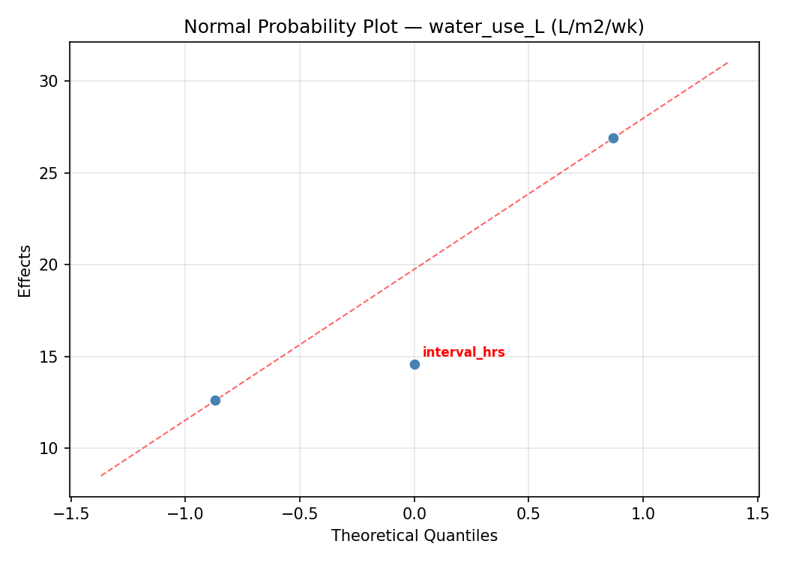
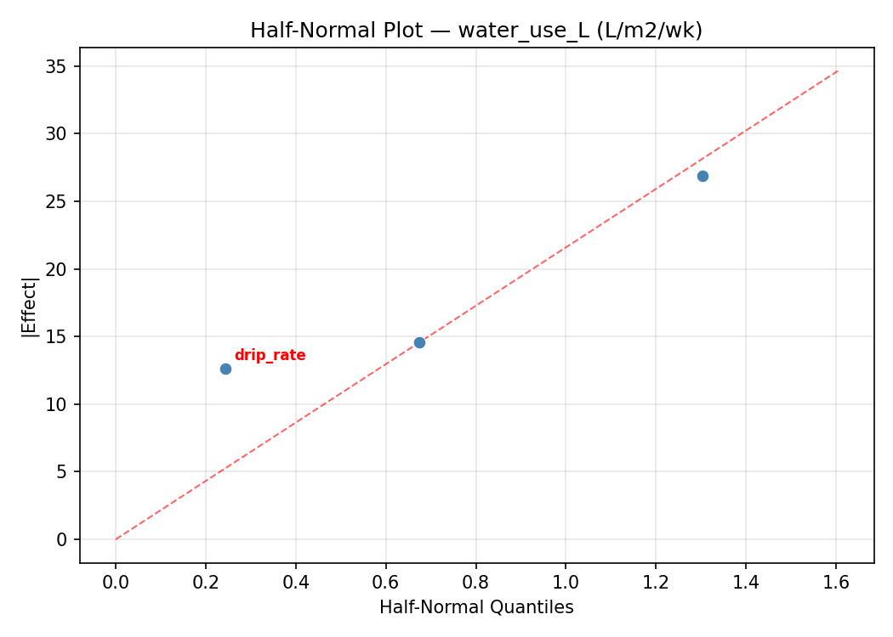
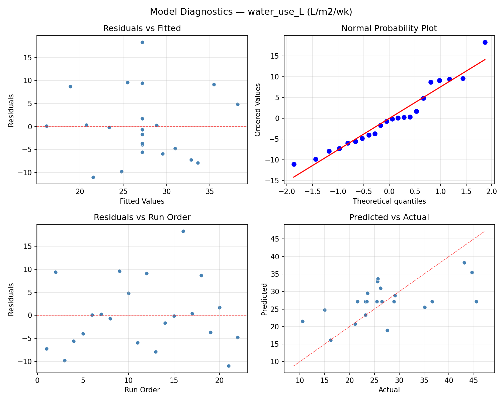
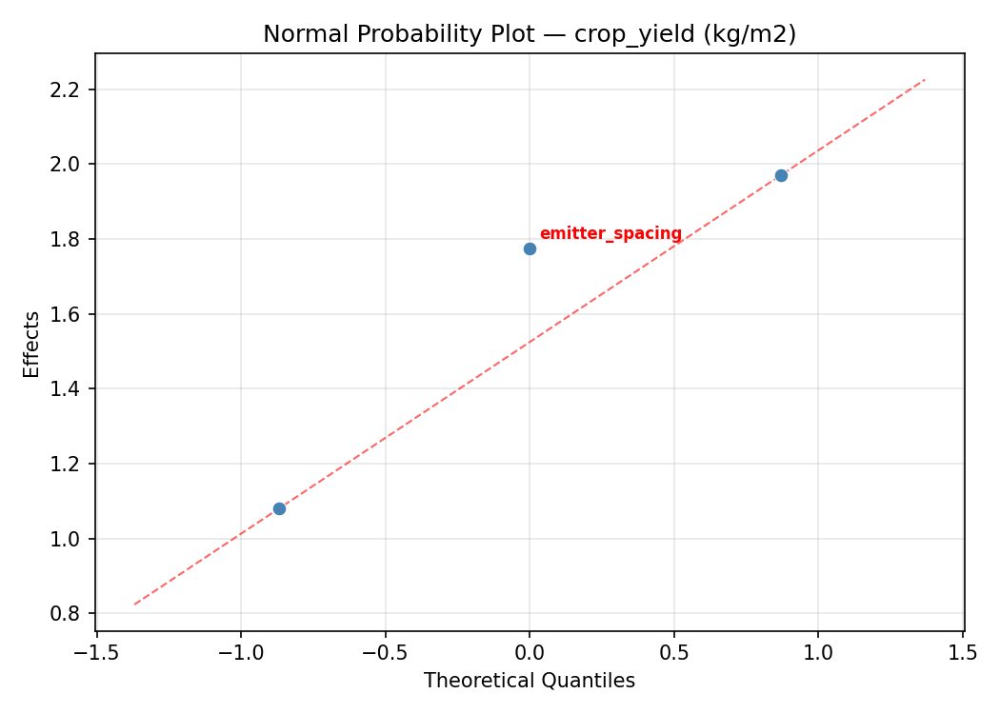
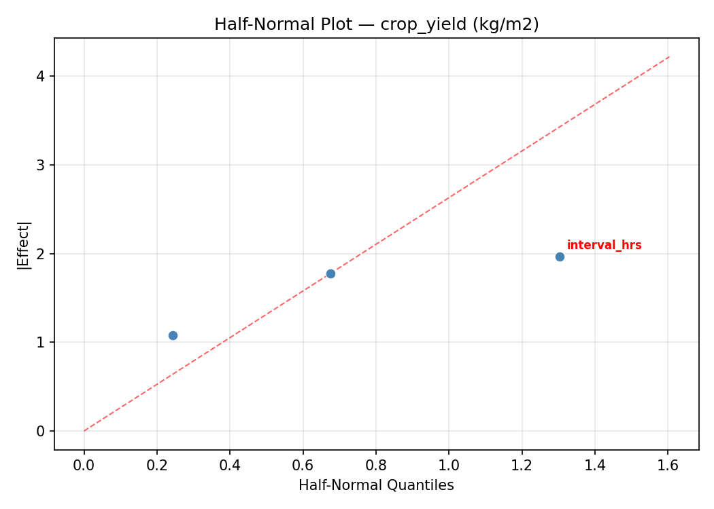
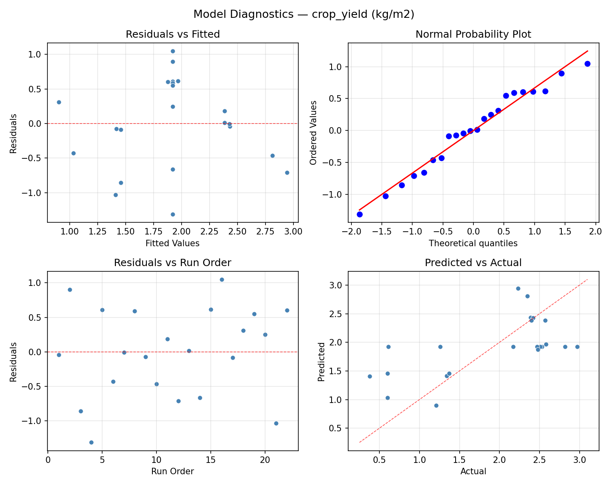

Summary
This experiment investigates drip irrigation scheduling. Central composite design to minimize water usage and maximize crop yield by tuning drip rate, interval, and emitter spacing.
The design varies 3 factors: drip rate (L/hr), ranging from 1 to 4, interval hrs (hrs), ranging from 6 to 48, and emitter spacing (cm), ranging from 20 to 50. The goal is to optimize 2 responses: water use L (L/m2/wk) (minimize) and crop yield (kg/m2) (maximize). Fixed conditions held constant across all runs include crop = strawberry, season = summer.
A Central Composite Design (CCD) was selected to fit a full quadratic response surface model, including curvature and interaction effects. With 3 factors this produces 22 runs including center points and axial (star) points that extend beyond the factorial range.
Quadratic response surface models were fitted to capture potential curvature and factor interactions. The RSM contour plots below visualize how pairs of factors jointly affect each response.
Key Findings
For water use L, the most influential factors were interval hrs (55.0%), drip rate (30.8%), emitter spacing (14.2%). The best observed value was 10.5 (at drip rate = 2.5, interval hrs = 27, emitter spacing = 62.3861).
For crop yield, the most influential factors were drip rate (44.3%), emitter spacing (31.6%), interval hrs (24.1%). The best observed value was 2.97 (at drip rate = 2.5, interval hrs = 27, emitter spacing = 35).
Recommended Next Steps
- Run confirmation experiments at the predicted optimal settings to validate the model.
- Consider whether any fixed factors should be varied in a future study.
Experimental Setup
Factors
| Factor | Low | High | Unit |
|---|
drip_rate | 1 | 4 | L/hr |
interval_hrs | 6 | 48 | hrs |
emitter_spacing | 20 | 50 | cm |
Fixed: crop = strawberry, season = summer
Responses
| Response | Direction | Unit |
|---|
water_use_L | ↓ minimize | L/m2/wk |
crop_yield | ↑ maximize | kg/m2 |
Configuration
{
"metadata": {
"name": "Drip Irrigation Scheduling",
"description": "Central composite design to minimize water usage and maximize crop yield by tuning drip rate, interval, and emitter spacing"
},
"factors": [
{
"name": "drip_rate",
"levels": [
"1",
"4"
],
"type": "continuous",
"unit": "L/hr"
},
{
"name": "interval_hrs",
"levels": [
"6",
"48"
],
"type": "continuous",
"unit": "hrs"
},
{
"name": "emitter_spacing",
"levels": [
"20",
"50"
],
"type": "continuous",
"unit": "cm"
}
],
"fixed_factors": {
"crop": "strawberry",
"season": "summer"
},
"responses": [
{
"name": "water_use_L",
"optimize": "minimize",
"unit": "L/m2/wk"
},
{
"name": "crop_yield",
"optimize": "maximize",
"unit": "kg/m2"
}
],
"settings": {
"operation": "central_composite",
"test_script": "use_cases/104_irrigation_scheduling/sim.sh"
}
}
Experimental Matrix
The Central Composite Design produces 22 runs. Each row is one experiment with specific factor settings.
| Run | drip_rate | interval_hrs | emitter_spacing |
|---|
| 1 | 2.5 | 27 | 35 |
| 2 | 4 | 6 | 50 |
| 3 | 1 | 48 | 20 |
| 4 | 2.5 | 65.3406 | 35 |
| 5 | 2.5 | 27 | 35 |
| 6 | -0.238613 | 27 | 35 |
| 7 | 2.5 | 27 | 7.61387 |
| 8 | 2.5 | 27 | 35 |
| 9 | 4 | 48 | 20 |
| 10 | 5.23861 | 27 | 35 |
| 11 | 2.5 | 27 | 35 |
| 12 | 2.5 | -11.3406 | 35 |
| 13 | 2.5 | 27 | 35 |
| 14 | 1 | 6 | 50 |
| 15 | 2.5 | 27 | 35 |
| 16 | 4 | 6 | 20 |
| 17 | 2.5 | 27 | 62.3861 |
| 18 | 4 | 48 | 50 |
| 19 | 2.5 | 27 | 35 |
| 20 | 1 | 6 | 20 |
| 21 | 1 | 48 | 50 |
| 22 | 2.5 | 27 | 35 |
Step-by-Step Workflow
1
Preview the design
$ python doe.py info --config use_cases/104_irrigation_scheduling/config.json
2
Generate the runner script
$ python doe.py generate --config use_cases/104_irrigation_scheduling/config.json \
--output use_cases/104_irrigation_scheduling/results/run.sh --seed 42
3
Execute the experiments
$ bash use_cases/104_irrigation_scheduling/results/run.sh
4
Analyze results
$ python doe.py analyze --config use_cases/104_irrigation_scheduling/config.json
5
Get optimization recommendations
$ python doe.py optimize --config use_cases/104_irrigation_scheduling/config.json
6
Multi-objective optimization
With 2 competing responses, use --multi to find the best compromise via Derringer–Suich desirability.
$ python doe.py optimize --config use_cases/104_irrigation_scheduling/config.json --multi
7
Generate the HTML report
$ python doe.py report --config use_cases/104_irrigation_scheduling/config.json \
--output use_cases/104_irrigation_scheduling/results/report.html
Features Exercised
| Feature | Value |
|---|
| Design type | central_composite |
| Factor types | continuous (all 3) |
| Arg style | double-dash |
| Responses | 2 (water_use_L ↓, crop_yield ↑) |
| Total runs | 22 |
Analysis Results
Generated from actual experiment runs using the DOE Helper Tool.
Response: water_use_L
Top factors: interval_hrs (55.0%), drip_rate (30.8%), emitter_spacing (14.2%).
ANOVA
| Source | DF | SS | MS | F | p-value |
|---|
| Source | DF | SS | MS | F | p-value |
| drip_rate | 4 | 418.0086 | 104.5022 | 1.065 | 0.4278 |
| interval_hrs | 4 | 618.7761 | 154.6940 | 1.576 | 0.2617 |
| emitter_spacing | 4 | 193.4420 | 48.3605 | 0.493 | 0.7419 |
| Lack | of | Fit | 2 | 0.0000 | 0.0000 |
| Pure | Error | 7 | 687.1087 | | |
| Error | 9 | 502.7919 | 98.1584 | | |
| Total | 21 | 1733.0186 | 82.5247 | | |
Pareto Chart

Main Effects Plot

Normal Probability Plot of Effects

Half-Normal Plot of Effects

Model Diagnostics

Response: crop_yield
Top factors: drip_rate (44.3%), emitter_spacing (31.6%), interval_hrs (24.1%).
ANOVA
| Source | DF | SS | MS | F | p-value |
|---|
| Source | DF | SS | MS | F | p-value |
| drip_rate | 4 | 6.1183 | 1.5296 | 2.393 | 0.1275 |
| interval_hrs | 4 | 1.2911 | 0.3228 | 0.505 | 0.7337 |
| emitter_spacing | 4 | 1.1391 | 0.2848 | 0.445 | 0.7735 |
| Lack | of | Fit | 2 | 1.2794 | 0.6397 |
| Pure | Error | 7 | 4.4750 | | |
| Error | 9 | 5.7543 | 0.6393 | | |
| Total | 21 | 14.3028 | 0.6811 | | |
Pareto Chart

Main Effects Plot

Normal Probability Plot of Effects

Half-Normal Plot of Effects

Model Diagnostics

Response Surface Plots
3D surfaces fitted with quadratic RSM. Red dots are observed data points.
crop yield drip rate vs emitter spacing

crop yield drip rate vs interval hrs

crop yield interval hrs vs emitter spacing

water use L drip rate vs emitter spacing

water use L drip rate vs interval hrs

water use L interval hrs vs emitter spacing

Multi-Objective Optimization
When responses compete, Derringer–Suich desirability finds the best compromise.
Each response is scaled to a 0–1 desirability, then combined via a weighted geometric mean.
Overall Desirability
D = 0.7342
Per-Response Desirability
| Response | Weight | Desirability | Predicted | Dir |
|---|
water_use_L |
1.0 |
|
23.20 0.6247 23.20 L/m2/wk |
↓ |
crop_yield |
1.5 |
|
2.58 0.8177 2.58 kg/m2 |
↑ |
Recommended Settings
| Factor | Value |
|---|
drip_rate | 2.5 L/hr |
interval_hrs | 27 hrs |
emitter_spacing | 35 cm |
Source: from observed run #15
Trade-off Summary
Sacrifice = how much worse than single-objective best.
| Response | Predicted | Best Observed | Sacrifice |
|---|
crop_yield | 2.58 | 2.97 | +0.39 |
Top 3 Runs by Desirability
| Run | D | Factor Settings |
|---|
| #11 | 0.7274 | drip_rate=2.5, interval_hrs=65.3406, emitter_spacing=35 |
| #5 | 0.7247 | drip_rate=1, interval_hrs=48, emitter_spacing=20 |
Model Quality
| Response | R² | Type |
|---|
crop_yield | 0.0741 | linear |
Full Multi-Objective Output
============================================================
MULTI-OBJECTIVE OPTIMIZATION
Method: Derringer-Suich Desirability Function
============================================================
Overall desirability: D = 0.7342
Response Weight Desirability Predicted Direction
---------------------------------------------------------------------
water_use_L 1.0 0.6247 23.20 L/m2/wk ↓
crop_yield 1.5 0.8177 2.58 kg/m2 ↑
Recommended settings:
drip_rate = 2.5 L/hr
interval_hrs = 27 hrs
emitter_spacing = 35 cm
(from observed run #15)
Trade-off summary:
water_use_L: 23.20 (best observed: 10.50, sacrifice: +12.70)
crop_yield: 2.58 (best observed: 2.97, sacrifice: +0.39)
Model quality:
water_use_L: R² = 0.0759 (linear)
crop_yield: R² = 0.0741 (linear)
Top 3 observed runs by overall desirability:
1. Run #15 (D=0.7342): drip_rate=2.5, interval_hrs=27, emitter_spacing=35
2. Run #11 (D=0.7274): drip_rate=2.5, interval_hrs=65.3406, emitter_spacing=35
3. Run #5 (D=0.7247): drip_rate=1, interval_hrs=48, emitter_spacing=20
Full Analysis Output
=== Main Effects: water_use_L ===
Factor Effect Std Error % Contribution
--------------------------------------------------------------
interval_hrs 26.0000 1.9368 55.0%
drip_rate 14.5500 1.9368 30.8%
emitter_spacing 6.7167 1.9368 14.2%
=== ANOVA Table: water_use_L ===
Source DF SS MS F p-value
-----------------------------------------------------------------------------
drip_rate 4 418.0086 104.5022 1.065 0.4278
interval_hrs 4 618.7761 154.6940 1.576 0.2617
emitter_spacing 4 193.4420 48.3605 0.493 0.7419
Lack of Fit 2 0.0000 0.0000 0.000 1.0000
Pure Error 7 687.1087 98.1584
Error 9 502.7919 98.1584
Total 21 1733.0186 82.5247
=== Summary Statistics: water_use_L ===
drip_rate:
Level N Mean Std Min Max
------------------------------------------------------------
-0.238613 1 25.5000 0.0000 25.5000 25.5000
1 4 21.5500 11.0304 10.5000 35.1000
2.5 12 30.7500 9.1853 21.1000 45.5000
4 4 25.2500 2.7037 23.2000 28.9000
5.23861 1 16.2000 0.0000 16.2000 16.2000
interval_hrs:
Level N Mean Std Min Max
------------------------------------------------------------
-11.3406 1 26.2000 0.0000 26.2000 26.2000
27 12 28.3250 8.9658 16.2000 45.5000
48 4 28.2000 5.1595 23.2000 35.1000
6 4 18.6000 7.0744 10.5000 25.7000
65.3406 1 44.6000 0.0000 44.6000 44.6000
emitter_spacing:
Level N Mean Std Min Max
------------------------------------------------------------
20 4 23.8000 6.0636 15.0000 28.9000
35 12 29.7167 10.1199 16.2000 45.5000
50 4 23.0000 10.0456 10.5000 35.1000
62.3861 1 26.5000 0.0000 26.5000 26.5000
7.61387 1 27.6000 0.0000 27.6000 27.6000
=== Main Effects: crop_yield ===
Factor Effect Std Error % Contribution
--------------------------------------------------------------
drip_rate 1.8200 0.1759 44.3%
emitter_spacing 1.3000 0.1759 31.6%
interval_hrs 0.9900 0.1759 24.1%
=== ANOVA Table: crop_yield ===
Source DF SS MS F p-value
-----------------------------------------------------------------------------
drip_rate 4 6.1183 1.5296 2.393 0.1275
interval_hrs 4 1.2911 0.3228 0.505 0.7337
emitter_spacing 4 1.1391 0.2848 0.445 0.7735
Lack of Fit 2 1.2794 0.6397 1.001 0.4147
Pure Error 7 4.4750 0.6393
Error 9 5.7543 0.6393
Total 21 14.3028 0.6811
=== Summary Statistics: crop_yield ===
drip_rate:
Level N Mean Std Min Max
------------------------------------------------------------
-0.238613 1 1.2600 0.0000 1.2600 1.2600
1 4 1.1775 0.9067 0.3800 2.3900
2.5 12 2.1675 0.7146 0.6100 2.9700
4 4 2.4200 0.1831 2.1700 2.5800
5.23861 1 0.6000 0.0000 0.6000 0.6000
interval_hrs:
Level N Mean Std Min Max
------------------------------------------------------------
-11.3406 1 2.4800 0.0000 2.4800 2.4800
27 12 1.9300 0.8592 0.6000 2.9700
48 4 2.1075 0.5327 1.3400 2.5300
6 4 1.4900 1.1605 0.3800 2.5800
65.3406 1 2.2300 0.0000 2.2300 2.2300
emitter_spacing:
Level N Mean Std Min Max
------------------------------------------------------------
20 4 1.8900 0.8665 0.6000 2.4000
35 12 2.0125 0.8299 0.6000 2.9700
50 4 1.7075 1.0544 0.3800 2.5800
62.3861 1 2.5100 0.0000 2.5100 2.5100
7.61387 1 1.2100 0.0000 1.2100 1.2100
Optimization Recommendations
=== Optimization: water_use_L ===
Direction: minimize
Best observed run: #21
drip_rate = 2.5
interval_hrs = 27
emitter_spacing = 62.3861
Value: 10.5
RSM Model (linear, R² = 0.1746, Adj R² = 0.0371):
Coefficients:
intercept +27.1773
drip_rate -1.9702
interval_hrs +1.7131
emitter_spacing -3.7173
RSM Model (quadratic, R² = 0.4613, Adj R² = 0.0573):
Coefficients:
intercept +30.0181
drip_rate -1.9702
interval_hrs +1.7131
emitter_spacing -3.7173
drip_rate*interval_hrs -1.2125
drip_rate*emitter_spacing +4.1875
interval_hrs*emitter_spacing -3.9375
drip_rate^2 -0.1804
interval_hrs^2 -0.8104
emitter_spacing^2 -3.2704
Curvature analysis:
emitter_spacing coef=-3.2704 concave (has a maximum)
interval_hrs coef=-0.8104 concave (has a maximum)
drip_rate coef=-0.1804 concave (has a maximum)
Notable interactions:
drip_rate*emitter_spacing coef=+4.1875 (synergistic)
interval_hrs*emitter_spacing coef=-3.9375 (antagonistic)
drip_rate*interval_hrs coef=-1.2125 (antagonistic)
Predicted optimum (from quadratic model, at observed points):
drip_rate = 1
interval_hrs = 48
emitter_spacing = 20
Predicted value: 42.4949
Surface optimum (via L-BFGS-B, quadratic model):
drip_rate = 1
interval_hrs = 48
emitter_spacing = 50
Predicted value: 18.8103
Model quality: Weak fit — consider adding center points or using a different design.
Factor importance:
1. emitter_spacing (effect: 18.9, contribution: 52.7%)
2. drip_rate (effect: 11.5, contribution: 32.0%)
3. interval_hrs (effect: 5.5, contribution: 15.2%)
=== Optimization: crop_yield ===
Direction: maximize
Best observed run: #16
drip_rate = 2.5
interval_hrs = 27
emitter_spacing = 35
Value: 2.97
RSM Model (linear, R² = 0.0233, Adj R² = -0.1394):
Coefficients:
intercept +1.9209
drip_rate +0.0740
interval_hrs -0.1310
emitter_spacing -0.0106
RSM Model (quadratic, R² = 0.5728, Adj R² = 0.2524):
Coefficients:
intercept +2.1904
drip_rate +0.0740
interval_hrs -0.1310
emitter_spacing -0.0106
drip_rate*interval_hrs +0.3800
drip_rate*emitter_spacing +0.5900
interval_hrs*emitter_spacing -0.2650
drip_rate^2 -0.0512
interval_hrs^2 +0.0463
emitter_spacing^2 -0.3992
Curvature analysis:
emitter_spacing coef=-0.3992 concave (has a maximum)
drip_rate coef=-0.0512 negligible curvature
interval_hrs coef=+0.0463 negligible curvature
Notable interactions:
drip_rate*emitter_spacing coef=+0.5900 (synergistic)
drip_rate*interval_hrs coef=+0.3800 (synergistic)
Predicted optimum (from quadratic model, at observed points):
drip_rate = 2.5
interval_hrs = -11.3406
emitter_spacing = 35
Predicted value: 2.5838
Surface optimum (via L-BFGS-B, quadratic model):
drip_rate = 1
interval_hrs = 6
emitter_spacing = 28.6956
Predicted value: 2.6929
Model quality: Moderate fit — use predictions directionally, not precisely.
Factor importance:
1. emitter_spacing (effect: 1.8, contribution: 47.5%)
2. drip_rate (effect: 1.2, contribution: 32.8%)
3. interval_hrs (effect: 0.7, contribution: 19.7%)